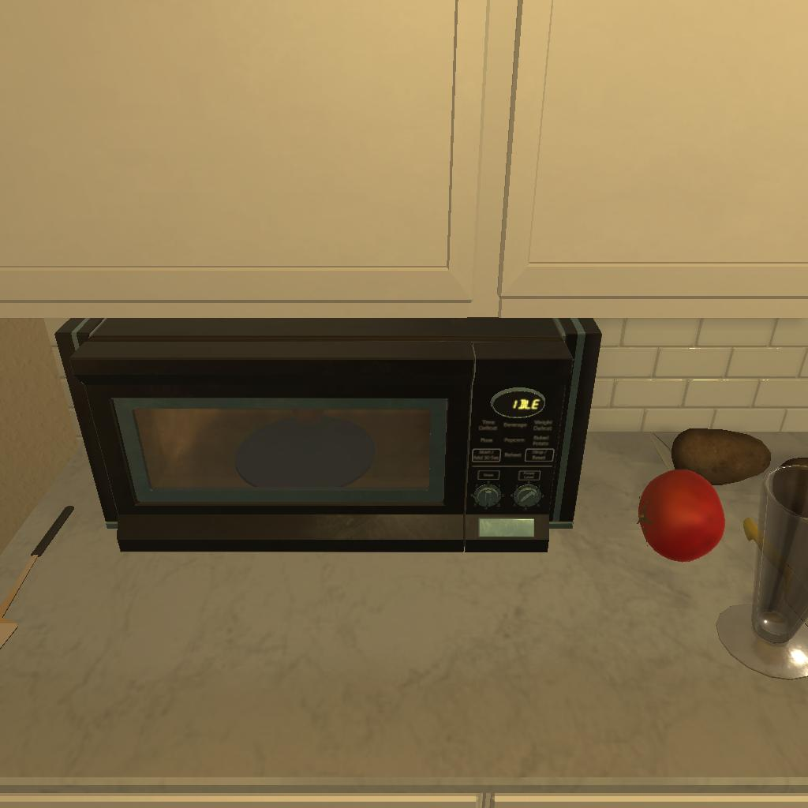

---------------------------------------------------------task: 29---------------------------------------------------------
--------------------------------------------------------------------------------------------------------------------------------------------------------------------
--------------------------------------------------------------------------------------------------------------------------------------------------------------------
Step:--------------------------------------------------------------------------19-------------------------------------------------------------------------------
----------------------------------------
VLM Prompt:
**Task**
Please perform as an embodied AI agent. Our final objective is to find two tomato and put them in countertop. Below is the plan for completing the task, the current observation, alongside historical data and admissible actions for the next step. Please determine the best action for the next step!
**Plan**
Below is a detailed step-by-step plan to complete the task.
1. Find a tomato.
2. Pick up the tomato.
3. Find a countertop.
4. Place the picked-up tomato on the countertop.
5. Find another tomato.
6. Pick up the tomato.
7. Return to the previous countertop.
8. Place the picked-up tomato on the countertop with the other tomato.
**Current Observation**
Displayed is an image capturing the current position of the agent.
**History Information**
Displayed are the previous observations with their corresponding actions.
Current State 1:
1. Place: Unspecified
2. Step Index in Plan: 1
3. Objects: Tomato
4. Action: Go to sinkbasin 1
Current State 2:
1. Place: Sinkbasin
2. Step Index in Plan: 1
3. Objects: Tomato
4. Action: Take tomato 1 from sinkbasin 1
Current State 3:
1. Place: Sinkbasin
2. Step Index in Plan: Step 2
3. Objects: Tomato
4. Action: Go to countertop 1
Current State 4:
1. Place: In front of a microwave
2. Step Index in Plan: 3
3. Objects: Tomato 1, Countertop 1
4. Action: Put tomato 1 in/on countertop 1
Current State 5:
1. Place: In front of a microwave
2. Step Index in Plan: 5
3. Objects: Microwave, Countertop, Tomato
4. Action: Take tomato 1 from countertop 1
Current State 6:
1. Place: In front of a microwave
2. Step Index in Plan: 5
3. Objects: Tomato, Countertop, Microwave
4. Action: Take tomato 1 from countertop 1
Current State 7:
1. Place: Countertop near a microwave
2. Step Index in Plan: 5
3. Objects: Second tomato
4. Action: Take tomato 1 from countertop 1
Current State 8:
1. Place: Countertop next to the microwave
2. Step Index in Plan: 5
3. Objects: Tomato 1, Countertop 1
4. Action: Take tomato 1 from countertop 1
Current State 9:
1. Place: Countertop next to the microwave
2. Step Index in Plan: 5
3. Objects: Tomato 1
4. Action: Take tomato 1 from countertop 1
Current State 10:
1. Place: Countertop next to the microwave
2. Step Index in Plan: 5
3. Objects: Tomato
4. Action: Take tomato 1 from countertop 1
Current State 11:
1. Place: Countertop next to the microwave
2. Step Index in Plan: 5
3. Objects: Tomato, Potato, Utensils
4. Action: Go to fridge 1
Current State 12:
1. Place: Countertop next to the microwave
2. Step Index in Plan: 5
3. Objects: Tomato, Potato, Utensils
4. Action: Take tomato 1 from countertop 1
Current State 13:
1. Place: Countertop
2. Step Index in Plan: 5
3. Objects: Microwave, Potato, Tomato
4. Action: Take tomato 1 from countertop 1
Current State 14:
1. Place: Countertop
2. Step Index in Plan: 5
3. Objects: Tomato, Potato, Utensils
4. Action: Go to fridge 1
Current State 15:
1. Place: Kitchen
2. Step Index in Plan: 5
3. Objects: Tomato, Countertop, Microwave
4. Action: Take tomato 1 from countertop 1
Current State 16:
1. Place: Countertop next to the microwave
2. Step Index in Plan: 5
3. Objects: Tomatoes
4. Action: Go to fridge 1
Current State 17:
1. Place: Kitchen
2. Step Index in Plan: 5
3. Objects: Magnetic letters on the fridge
4. Action: Open fridge 1
Current State 18:
1. Place: Kitchen Shelf
2. Step Index in Plan: 5
3. Objects: Egg, Potato
4. Action: Close fridge 1
Current State 19:
1. Place: Kitchen shelf near the fridge
2. Step Index in Plan: 5
3. Objects: Egg, Potato
4. Action: Go to countertop 1
**Admissible Actions**
(1): go to cabinet 1
(2): go to cabinet 2
(3): go to cabinet 3
(4): go to toaster 1
(5): go to cabinet 4
(6): go to cabinet 5
(7): go to microwave 1
(8): go to garbagecan 1
(9): go to drawer 1
(10): go to cabinet 6
(11): go to cabinet 7
(12): go to drawer 2
(13): go to stoveburner 1
(14): go to stoveburner 2
(15): go to countertop 2
(16): go to cabinet 8
(17): go to cabinet 9
(18): go to cabinet 10
(19): go to drawer 3
(20): go to drawer 4
(21): go to stoveburner 3
(22): go to stoveburner 4
(23): go to cabinet 11
(24): go to cabinet 12
(25): go to cabinet 13
(26): go to cabinet 14
(27): go to sinkbasin 1
(28): go to sink 1
(29): go to cabinet 15
(30): go to fridge 1
(31): go to cabinet 16
(32): go to cabinet 17
(33): go to cabinet 18
(34): go to cabinet 19
(35): go to diningtable 1
(36): go to coffeemachine 1
(37): go to cabinet 20
(38): take cup 1 from countertop 1
(39): take tomato 1 from countertop 1
(40): take potato 1 from countertop 1
(41): take spatul1 from countertop 1
(42): take butterknife 1 from countertop 1
(43): take knife 1 from countertop 1
(44): take potato 2 from countertop 1
**Analysis Guideline**
1. Analyze the **History Information** and determine our current step in the plan and our current place.
2. List all visible objects related to the task in the current observation.
3. Analyze the objects in the current observation based on the history and the requirements for the current step, and then determine if we can complete the step with the current observation.
4. Analyze and decide on the most appropriate action to take.
5. Summarize the analysis using the following format: "Analysis: [The summarization of the analysis], The Most Appropriate Action: (i which is the integer.): [Selected action]"
**Notes**
1. We must complete each step of the plan in order and cannot skip steps when the previous ones are not finished.
2. For "Go to" actions listed as "go to xxx [n]", interpret this as there are n distinct actions available: "go to xxx 1", "go to xxx 2", ..., "go to xxx n". Select one specific action from these options instead of using "go to xxx [n]".
3. If receptacles such as drawers, cabinets, and so forth are closed in the current observation, we may try to open them.
4. Pay attention to synonyms and ensure clarity in the terms used.
5. If there is no history available, we are at the first step and the current place is "Unknown".
6. The most appropriate action must be in the **Admissible Actions**, and we cannot generate a new action that is not in the **Admissible Actions**.
**Answer**
Please select the most suitable action by following the **Analysis Guideline**, keeping the above **Notes** in mind.
----------------------------------------
----------------------------------------
VLM Response:
Analysis: According to the History Information, we are currently on step 5 of the plan, which is to find another tomato. The Current Observation shows that we are in front of a countertop next to a microwave, where there is one tomato visible. Since we need to find another tomato, and the history indicates multiple attempts to take a tomato from the countertop and explore other areas like the fridge, it suggests that there is no second tomato on this countertop or in the fridge. Therefore, we need to look for the second tomato in a new location.
The Most Appropriate Action: (1): go to cabinet 1
----------------------------------------
----------------------------------------
>>> Refine VLM Response and Get Pure Action: go to cabinet 1
----------------------------------------
-----------------------------------------------------------------
Running time: 7.760011911392212 seconds
Total Money: 15.167869999999994
-----------------------------------------------------------------
-----------------------------------------------------------------
Summarization Prompt:
**Context**
Analysis: According to the History Information, we are currently on step 5 of the plan, which is to find another tomato. The Current Observation shows that we are in front of a countertop next to a microwave, where there is one tomato visible. Since we need to find another tomato, and the history indicates multiple attempts to take a tomato from the countertop and explore other areas like the fridge, it suggests that there is no second tomato on this countertop or in the fridge. Therefore, we need to look for the second tomato in a new location.
The Most Appropriate Action: (1): go to cabinet 1
**Summary Format**
1. Place: [Specify the current location]
2. Step Index in Plan: [Dispkay the current step number in the plan before taking the current action]
3. Objects: [List the objects relevant to the task]
4. Action: [Describe the most appropriate action without the "(x)" and keep the integer of the object]
Please analyze the **Context** and summarize the analysis using the **Summary Format**.
-----------------------------------------------------------------
-----------------------------------------------------------------
Summarization Response:
1. Place: In front of a countertop next to a microwave
2. Step Index in Plan: 5
3. Objects: Tomato, Countertop, Microwave
4. Action: Go to cabinet 1
-----------------------------------------------------------------
-----------------------------------------------------------------
Text Observation:You arrive at loc 0. The cabinet 1 is closed.
-----------------------------------------------------------------
UNSUCCEED